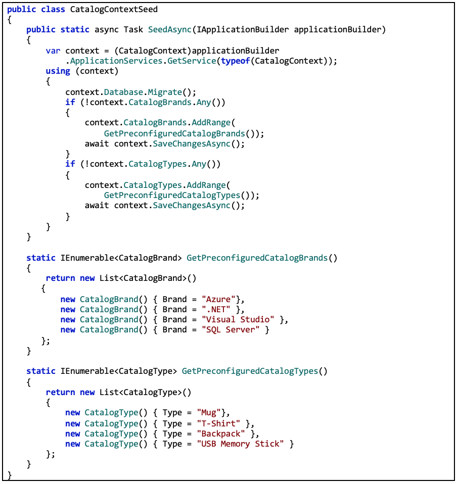When you run integration tests, having a way to generate data consistent with your integration tests is useful. Being able to create everything from scratch, including an instance of SQL Server running on a container, is great for test environments.
Another good choice when running tests is to use the Entity Framework InMemory database provider. You can specify that configuration in the ConfigureServices method of the Startup class in your Web API project:
There is an important catch, though. The in-memory database does not support many constraints that are specific to a particular database. For instance, you might add a unique index on a column in your EF Core model and write a test against your in-memory database to check that it does not let you add a duplicate value. But when you are using the in-memory database, you cannot handle unique indexes on a column. Therefore, the in-memory database does not behave exactly the same as a real SQL Server database—it does not emulate database-specific constraints.
Even so, an in-memory database is still useful for testing and prototyping. But if you want to create accurate integration tests that take into account the behavior of a specific database implementation, you need to use a real database like SQL Server. For that purpose, running SQL Server in a container is a great choice and more accurate than the EF Core InMemory database provider.
You can run Redis on a container, especially for development and testing and for proof-of-concept scenarios. This scenario is convenient, because you can have all your dependencies running on containers—not just for your local development machines, but for your testing environments in your CI/CD pipelines.
However, when you run Redis in production, it is better to look for a high-availability solution like Redis Microsoft Azure, which runs as a PaaS (Platform as a Service). In your code, you just need to change your connection strings.
Redis provides a Docker image with Redis. That image is available from Docker Hub at this URL:
https://hub.docker.com/_/redis/
You can directly run a Docker Redis container by executing the following Docker CLI command in your command prompt:
The Redis image includes expose:6379 (the port used by Redis), so standard container linking will make it automatically available to the linked containers.
In eShopOnContainers, the basket.api microservice uses a Redis cache running as a container. That basket.data container is defined as part of the multi-container docker-compose.yml file, as shown in the following example:
This code in the docker-compose.yml defines a container named basket.data based on the redis image and publishing the port 6379 internally, meaning that it will be accessible only from other containers running within the Docker host.
Finally, in the docker-compose.override.yml file, the basket.api microservice for the eShopOnContainers sample defines the connection string to use for that Redis container:
As mentioned before, the name of the microservice “basket.data” is resolved by docker’s internal network DNS.
As described earlier, when you use event-based communication, a microservice publishes an event when something notable happens, such as when it updates a business entity. Other microservices subscribe to those events. When a microservice receives an event, it can update its own business entities, which might lead to more events being published. This is the essence of the eventual consistency concept. This publish/subscribe system is usually performed by using an implementation of an event bus. The event bus can be designed as an interface with the API needed to subscribe and unsubscribe to events and to publish events. It can also have one or more implementations based on any inter-process or messaging communication, such as a messaging queue or a service bus that supports asynchronous communication and a publish/subscribe model.
You can use events to implement business transactions that span multiple services, which gives you eventual consistency between those services. An eventually consistent transaction consists of a series of distributed actions. At each action, the microservice updates a business entity and publishes an event that triggers the next action.
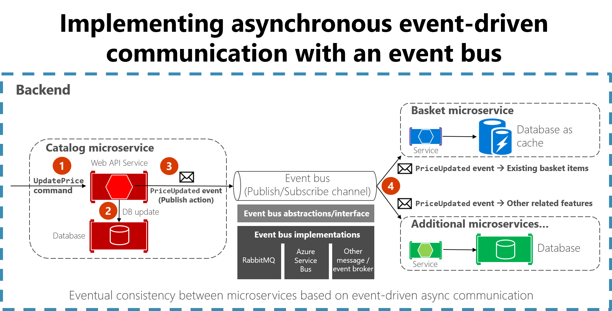
Figure 6-18. Event-driven communication based on an event bus
This section describes how you can implement this type of communication with .NET by using a generic event bus interface, as shown in Figure 6-18. There are multiple potential implementations, each using a different technology or infrastructure such as RabbitMQ, Azure Service Bus, or any other third-party open-source or commercial service bus.
As noted in the architecture section, you can choose from multiple messaging technologies for implementing your abstract event bus. But these technologies are at different levels. For instance, RabbitMQ, a messaging broker transport, is at a lower level than commercial products like Azure Service Bus, NServiceBus, MassTransit, or Brighter. Most of these products can work on top of either RabbitMQ or Azure Service Bus. Your choice of product depends on how many features and how much out-of-the-box scalability you need for your application.
For implementing just an event bus proof-of-concept for your development environment, as in the eShopOnContainers sample, a simple implementation on top of RabbitMQ running as a container might be enough. But for mission-critical and production systems that need high scalability, you might want to evaluate and use Azure Service Bus.
If you require high-level abstractions and richer features like Sagas for long-running processes that make distributed development easier, other commercial and open-source service buses like NServiceBus, MassTransit, and Brighter are worth evaluating. In this case, the abstractions and API to use would usually be directly the ones provided by those high-level service buses instead of your own abstractions (like the simple event bus abstractions provided at eShopOnContainers). For that matter, you can research the forked eShopOnContainers using NServiceBus (additional derived sample implemented by Particular Software)
Of course, you could always build your own service bus features on top of lower-level technologies like RabbitMQ and Docker, but the work needed to “reinvent the wheel” might be too costly for a custom enterprise application.
To reiterate: the sample event bus abstractions and implementation showcased in the eShopOnContainers sample are intended to be used only as a proof of concept. Once you have decided that you want to have asynchronous and event-driven communication, as explained in the current section, you should choose the service bus product that best fits your needs for production.
Integration events are used for bringing domain state in sync across multiple microservices or external systems. This is done by publishing integration events outside the microservice. When an event is published to multiple receiver microservices (to as many microservices as are subscribed to the integration event), the appropriate event handler in each receiver microservice handles the event.
An integration event is basically a data-holding class, as in the following example:
The integration events can be defined at the application level of each microservice, so they are decoupled from other microservices, in a way comparable to how ViewModels are defined in the server and client. What is not recommended is sharing a common integration events library across multiple microservices; doing that would be coupling those microservices with a single event definition data library. You do not want to do that for the same reasons that you do not want to share a common domain model across multiple microservices: microservices must be completely autonomous.
There are only a few kinds of libraries you should share across microservices. One is libraries that are final application blocks, like the Event Bus client API, as in eShopOnContainers. Another is libraries that constitute tools that could also be shared as NuGet components, like JSON serializers.
An event bus allows publish/subscribe-style communication between microservices without requiring the components to explicitly be aware of each other, as shown in Figure 6-19.
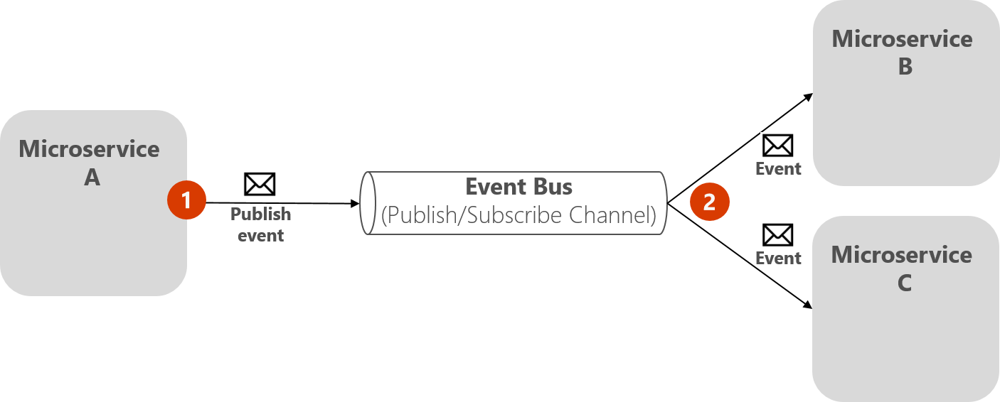
Figure 6-19. Publish/subscribe basics with an event bus
The event bus is related to the Observer pattern and the publish-subscribe pattern.
In the Observer pattern, your primary object (known as the Observable) notifies other interested objects (known as Observers) with relevant information (events).
The purpose of the Publish/Subscribe pattern is the same as the Observer pattern: you want to notify other services when certain events take place. But there is an important difference between the Observer and Pub/Sub patterns. In the observer pattern, the broadcast is performed directly from the observable to the observers, so they “know” each other. But when using a Pub/Sub pattern, there is a third component, called broker or message broker or event bus, which is known by both the publisher and subscriber. Therefore, when using the Pub/Sub pattern the publisher and the subscribers are precisely decoupled thanks to the mentioned event bus or message broker.
How do you achieve anonymity between publisher and subscriber? An easy way is let a middleman take care of all the communication. An event bus is one such middleman.
An event bus is typically composed of two parts:
In Figure 6-19 you can see how, from an application point of view, the event bus is nothing more than a Pub/Sub channel. The way you implement this asynchronous communication can vary. It can have multiple implementations so that you can swap between them, depending on the environment requirements (for example, production versus development environments).
In Figure 6-20 you can see an abstraction of an event bus with multiple implementations based on infrastructure messaging technologies like RabbitMQ, Azure Service Bus, or another event/message broker.
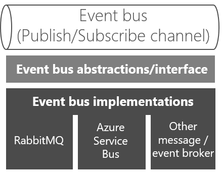
Figure 6- 20. Multiple implementations of an event bus
However, and as mentioned previously, using your own abstractions (the event bus interface) is good only if you need basic event bus features supported by your abstractions. If you need richer service bus features, you should probably use the API and abstractions provided by your preferred commercial service bus instead of your own abstractions.
Let’s start with some implementation code for the event bus interface and possible implementations for exploration purposes. The interface should be generic and straightforward, as in the following interface.
The Publish method is straightforward. The event bus will broadcast the integration event passed to it to any microservice, or even an external application, subscribed to that event. This method is used by the microservice that is publishing the event.
The Subscribe methods (you can have several implementations depending on the arguments) are used by the microservices that want to receive events. This method has two arguments. The first is the integration event to subscribe to (IntegrationEvent). The second argument is the integration event handler (or callback method), named IIntegrationEventHandler, to be executed when the receiver microservice gets that integration event message.
We should start by saying that if you create your custom event bus based on RabbitMQ running in a container, as the eShopOnContainers application does, it should be used only for your development and test environments. You should not use it for your production environment, unless you are building it as a part of a production-ready service bus. A simple custom event bus might be missing many production-ready critical features that a commercial service bus has.
One of the event bus custom implementation in eShopOnContainers is basically a library using the RabbitMQ API (There’s another implementation based on Azure Service Bus).
The event bus implementation with RabbitMQ lets microservices subscribe to events, publish events, and receive events, as shown in Figure 6-21.
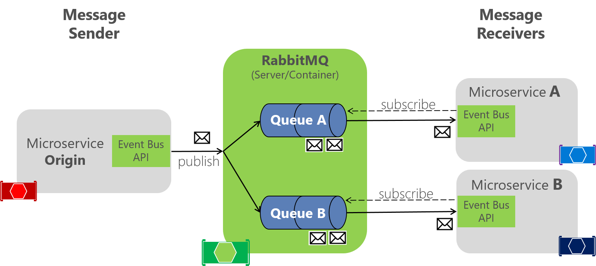
Figure 6-21. RabbitMQ implementation of an event bus
In the code, the EventBusRabbitMQ class implements the generic IEventBus interface. This is based on Dependency Injection so that you can swap from this dev/test version to a production version.
The RabbitMQ implementation of a sample dev/test event bus is boilerplate code. It has to handle the connection to the RabbitMQ server and provide code for publishing a message event to the queues. It also has to implement a dictionary of collections of integration event handlers for each event type; these event types can have a different instantiation and different subscriptions for each receiver microservice, as shown in Figure 6-21.
The following code is part of a simplified event bus implementation for RabbitMQ, improved in the actual code of eShopOnContainers. You usually do not need to code it unless you are making improvements. The code gets a connection and channel to RabbitMQ, creates a message, and then publishes the message into the queue.
The actual code of the Publish method in the eShopOnContainers application is improved by using a Polly retry policy, which retries the task a certain number of times in case the RabbitMQ container is not ready. This can occur when docker-compose is starting the containers; for example, the RabbitMQ container might start more slowly than the other containers.
As mentioned earlier, there are many possible configurations in RabbitMQ, so this code should be used only for dev/test environments.
As with the publish code, the following code is a simplification of part of the event bus implementation for RabbitMQ. Again, you usually do not need to change it unless you are improving it.
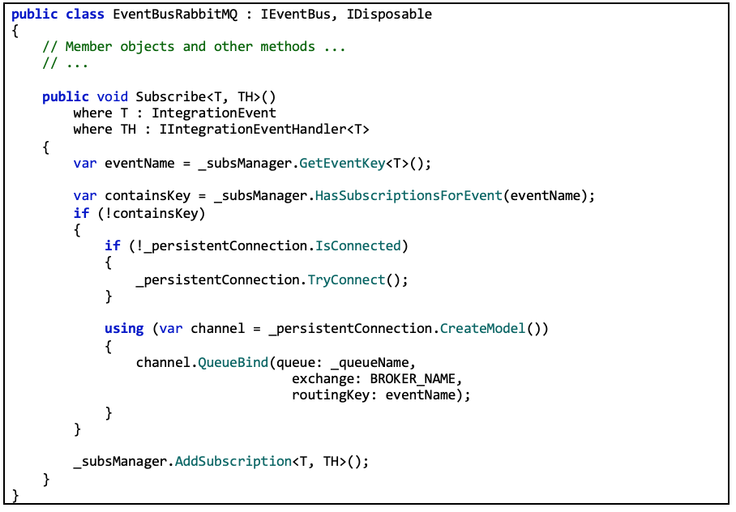Each event type has a related channel to get events from RabbitMQ. You can then have as many event handlers per channel and event type as needed.
The Subscribe method accepts an IIntegrationEventHandler object, which is like a callback method in the current microservice, plus its related IntegrationEvent object. The code then adds that event handler to the list of event handlers that each integration event type can have per client microservice. If the client code has not already been subscribed to the event, the code creates a channel for the event type so it can receive events in a push style from RabbitMQ when that event is published from any other service.
The first step for using the event bus is to subscribe the microservices to the events they want to receive. That should be done in the receiver microservices.
The following simple code shows what each receiver microservice needs to implement when starting the service (that is, in the Startup class) so it subscribes to the events it needs. In this case, the basket.api microservice needs to subscribe to ProductPriceChangedIntegrationEvent and the OrderStartedIntegrationEvent messages.
For instance, when subscribing to the ProductPriceChangedIntegrationEvent event, that makes the basket microservice aware of any changes to the product price and lets it warn the user about the change if that product is in the user’s basket.
After this code runs, the subscriber microservice will be listening through RabbitMQ channels. When any message of type ProductPriceChangedIntegrationEvent arrives, the code invokes the event handler that is passed to it and processes the event.
Finally, the message sender (origin microservice) publishes the integration events with code similar to the following example. (This is a simplified example that does not take atomicity into account.) You would implement similar code whenever an event must be propagated across multiple microservices, usually right after committing data or transactions from the origin microservice.
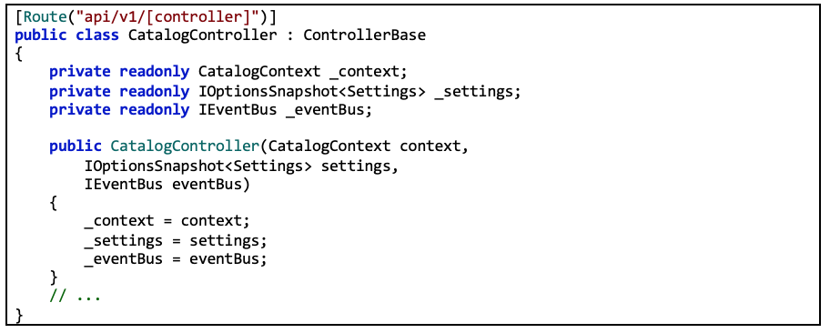First, the event bus implementation object (based on RabbitMQ or based on a service bus) would be injected at the controller constructor, as in the following code:
Then you use it from your controller’s methods, like in the UpdateProduct method:
In this case, since the origin microservice is a simple CRUD microservice, that code is placed right into a Web API controller.
In more advanced microservices, like when using CQRS approaches, it can be implemented in the CommandHandler class, within the Handle() method.
When you publish integration events through a distributed messaging system like your event bus, you have the problem of atomically updating the original database and publishing an event (that is, either both operations complete or none of them). For instance, in the simplified example shown earlier, the code commits data to the database when the product price is changed and then publishes a ProductPriceChangedIntegrationEvent message. Initially, it might look essential that these two operations be performed atomically. However, if you are using a distributed transaction involving the database and the message broker, as you do in older systems like Microsoft Message Queuing (MSMQ), this is not recommended for the reasons described by the CAP theorem.
Basically, you use microservices to build scalable and highly available systems. Simplifying somewhat, the CAP theorem says that you cannot build a (distributed) database (or a microservice that owns its model) that is continually available, strongly consistent, and tolerant to any partition. You must choose two of these three properties.
In microservices-based architectures, you should choose availability and tolerance, and you should deemphasize strong consistency. Therefore, in most modern microservice-based applications, you usually do not want to use distributed transactions in messaging, as you do when you implement distributed transactions based on the Windows Distributed Transaction Coordinator (DTC) with MSMQ.
Let’s go back to the initial issue and its example. If the service crashes after the database is updated (in this case, right after the line of code with _context.SaveChangesAsync()), but before the integration event is published, the overall system could become inconsistent. This might be business critical, depending on the specific business operation you are dealing with.
As mentioned earlier in the architecture section, you can have several approaches for dealing with this issue:
For this scenario, using the full Event Sourcing (ES) pattern is one of the best approaches, if not the best. However, in many application scenarios, you might not be able to implement a full ES system. ES means storing only domain events in your transactional database, instead of storing current state data. Storing only domain events can have great benefits, such as having the history of your system available and being able to determine the state of your system at any moment in the past. However, implementing a full ES system requires you to rearchitect most of your system and introduces many other complexities and requirements. For example, you would want to use a database specifically made for event sourcing, such as Event Store, or a document-oriented database such as Azure Cosmos DB, MongoDB, Cassandra, CouchDB, or RavenDB. ES is a great approach for this problem, but not the easiest solution unless you are already familiar with event sourcing.
The option to use transaction log mining initially looks very transparent. However, to use this approach, the microservice has to be coupled to your RDBMS transaction log, such as the SQL Server transaction log. This is probably not desirable. Another drawback is that the low-level updates recorded in the transaction log might not be at the same level as your high-level integration events. If so, the process of reverse-engineering those transaction log operations can be difficult.
A balanced approach is a mix of a transactional database table and a simplified ES pattern. You can use a state such as “ready to publish the event,” which you set in the original event when you commit it to the integration events table. You then try to publish the event to the event bus. If the publish-event action succeeds, you start another transaction in the origin service and move the state from “ready to publish the event” to “event already published.”
If the publish-event action in the event bus fails, the data still will not be inconsistent within the origin microservice—it is still marked as “ready to publish the event,” and with respect to the rest of the services, it will eventually be consistent. You can always have background jobs checking the state of the transactions or integration events. If the job finds an event in the “ready to publish the event” state, it can try to republish that event to the event bus.
Notice that with this approach, you are persisting only the integration events for each origin microservice, and only the events that you want to communicate to other microservices or external systems. In contrast, in a full ES system, you store all domain events as well.
Therefore, this balanced approach is a simplified ES system. You need a list of integration events with their current state (“ready to publish” versus “published”). But you only need to implement these states for the integration events. And in this approach, you do not need to store all your domain data as events in the transactional database, as you would in a full ES system.
If you are already using a relational database, you can use a transactional table to store integration events. To achieve atomicity in your application, you use a two-step process based on local transactions. Basically, you have an IntegrationEvent table in the same database where you have your domain entities. That table works as an insurance for achieving atomicity so that you include persisted integration events into the same transactions that are committing your domain data.
Step by step, the process goes like this:
When implementing the steps of publishing the events, you have these choices:
Figure 6-22 shows the architecture for the first of these approaches.
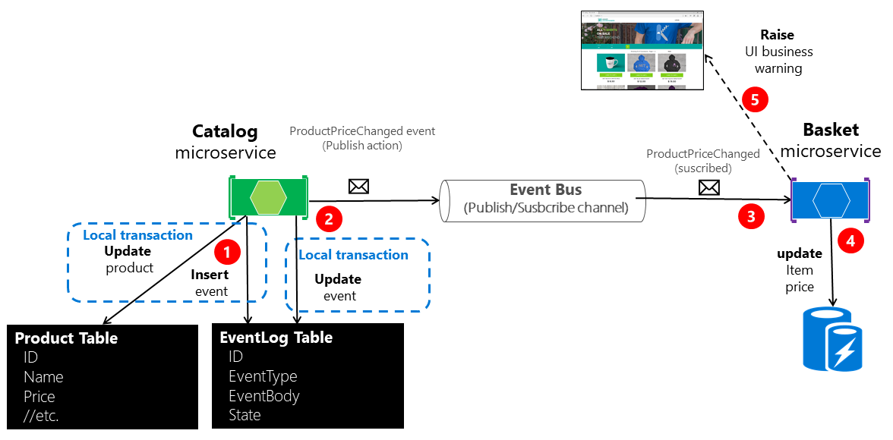
Figure 6-22. Atomicity when publishing events to the event bus
The approach illustrated in Figure 6-22 is missing an additional worker microservice that is in charge of checking and confirming the success of the published integration events. In case of failure, that additional checker worker microservice can read events from the table and republish them, that is, repeat step number 2.
About the second approach: you use the EventLog table as a queue and always use a worker microservice to publish the messages. In that case, the process is like that shown in Figure 6-23. This shows an additional microservice, and the table is the single source when publishing events.
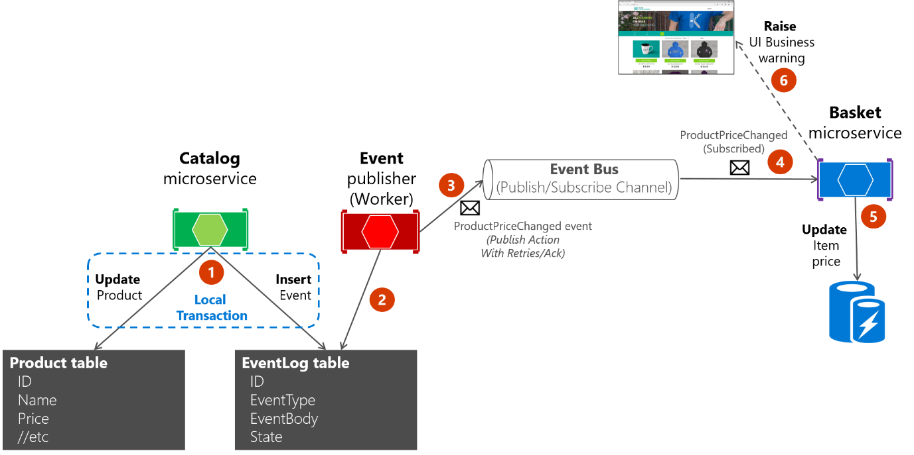
Figure 6-23. Atomicity when publishing events to the event bus with a worker microservice
For simplicity, the eShopOnContainers sample uses the first approach (with no additional processes or checker microservices) plus the event bus. However, the eShopOnContainers is not handling all possible failure cases. In a real application deployed to the cloud, you must embrace the fact that issues will arise eventually, and you must implement that check and resend logic. Using the table as a queue can be more effective than the first approach if you have that table as a single source of events when publishing them (with the worker) through the event bus.
The following code shows how you can create a single transaction involving multiple DbContext objects—one context related to the original data being updated, and the second context related to the IntegrationEventLog table.
Note that the transaction in the example code below will not be resilient if connections to the database have any issue at the time when the code is running. This can happen in cloud-based systems like Azure SQL DB, which might move databases across servers. For implementing resilient transactions across multiple contexts, see the Implementing resilient Entity Framework Core SQL connections section later in this guide.
For clarity, the following example shows the whole process in a single piece of code. However, the eShopOnContainers implementation is actually refactored and split this logic into multiple classes so it is easier to maintain.
After the ProductPriceChangedIntegrationEvent integration event is created, the transaction that stores the original domain operation (update the catalog item) also includes the persistence of the event in the EventLog table. This makes it a single transaction, and you will always be able to check whether event messages were sent.
The event log table is updated atomically with the original database operation, using a local transaction against the same database. If any of the operations fail, an exception is thrown and the transaction rolls back any completed operation, thus maintaining consistency between the domain operations and the event messages saved to the table.
In addition to the event subscription logic, you need to implement the internal code for the integration event handlers (like a callback method). The event handler is where you specify where the event messages of a certain type will be received and processed.
An event handler first receives an event instance from the event bus. Then it locates the component to be processed related to that integration event, propagating and persisting the event as a change in state in the receiver microservice. For example, if a ProductPriceChanged event originates in the catalog microservice, it is handled in the basket microservice and changes the state in this receiver basket microservice as well, as shown in the following code.
The event handler needs to verify whether the product exists in any of the basket instances. It also updates the item price for each related basket line item. Finally, it creates an alert to be displayed to the user about the price change, as shown in Figure 6-24.
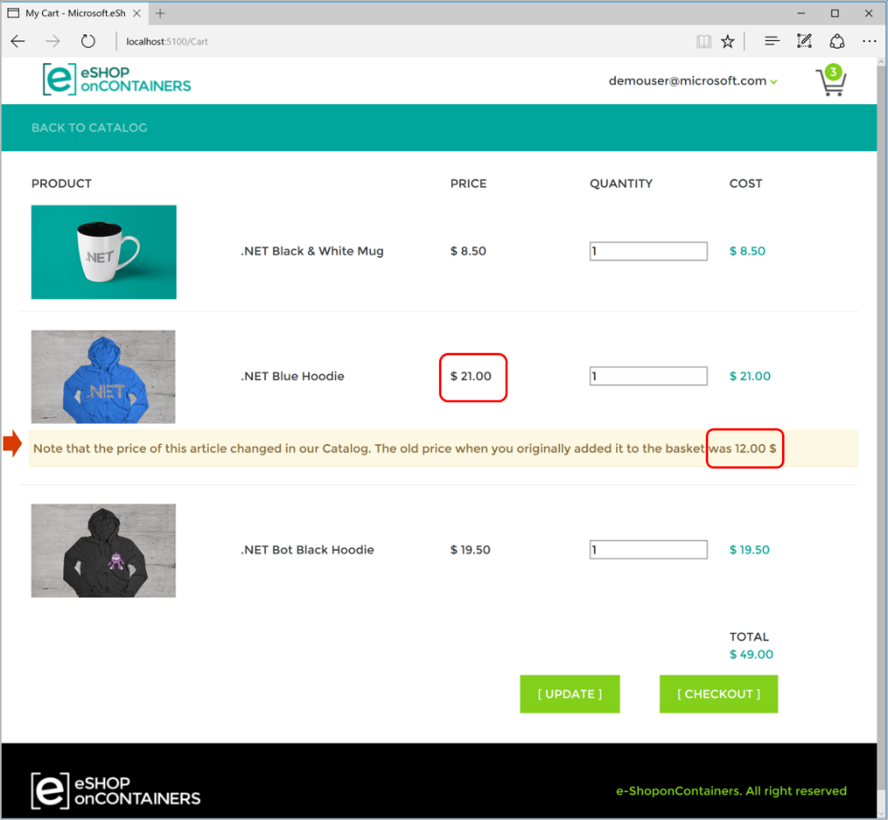
Figure 6-24. Displaying an item price change in a basket, as communicated by integration events
An important aspect of update message events is that a failure at any point in the communication should cause the message to be retried. Otherwise a background task might try to publish an event that has already been published, creating a race condition. You need to make sure that the updates are either idempotent or that they provide enough information to ensure that you can detect a duplicate, discard it, and send back only one response.
As noted earlier, idempotency means that an operation can be performed multiple times without changing the result. In a messaging environment, as when communicating events, an event is idempotent if it can be delivered multiple times without changing the result for the receiver microservice. This may be necessary because of the nature of the event itself, or because of the way the system handles the event. Message idempotency is important in any application that uses messaging, not just in applications that implement the event bus pattern.
An example of an idempotent operation is a SQL statement that inserts data into a table only if that data is not already in the table. It does not matter how many times you run that insert SQL statement; the result will be the same—the table will contain that data. Idempotency like this can also be necessary when dealing with messages if the messages could potentially be sent and therefore processed more than once. For instance, if retry logic causes a sender to send exactly the same message more than once, you need to make sure that it is idempotent.
It is possible to design idempotent messages. For example, you can create an event that says “set the product price to $25” instead of “add $5 to the product price.” You could safely process the first message any number of times and the result will be the same. That is not true for the second message. But even in the first case, you might not want to process the first event, because the system could also have sent a newer price-change event and you would be overwriting the new price.
Another example might be an order-completed event being propagated to multiple subscribers. It is important that order information be updated in other systems just once, even if there are duplicated message events for the same order-completed event.
It is convenient to have some kind of identity per event so that you can create logic that enforces that each event is processed only once per receiver.
Some message processing is inherently idempotent. For example, if a system generates image thumbnails, it might not matter how many times the message about the generated thumbnail is processed; the outcome is that the thumbnails are generated and they are the same every time. On the other hand, operations such as calling a payment gateway to charge a credit card may not be idempotent at all. In these cases, you need to ensure that processing a message multiple times has the effect that you expect.
You can make sure that message events are sent and processed just once per subscriber at different levels. One way is to use a deduplication feature offered by the messaging infrastructure you are using. Another is to implement custom logic in your destination microservice. Having validations at both the transport level and the application level is your best bet.
One way to make sure that an event is processed just once by any receiver is by implementing certain logic when processing the message events in event handlers. For example, that is the approach used in the eShopOnContainers application, as you can see in the source code of the UserCheckoutAcceptedIntegrationEventHandler class when it receives an UserCheckoutAcceptedIntegrationEvent integration event. (In this case we wrap the CreateOrderCommand with an IdentifiedCommand, using the eventMsg.RequestId as an identifier, before sending it to the command handler).
When intermittent network failures happen, messages can be duplicated, and the message receiver must be ready to handle these duplicated messages. If possible, receivers should handle messages in an idempotent way, which is better than explicitly handling them with deduplication.
According to the RabbitMQ documentation, “If a message is delivered to a consumer and then requeued (because it was not acknowledged before the consumer connection dropped, for example) then RabbitMQ will set the redelivered flag on it when it is delivered again (whether to the same consumer or a different one).
If the “redelivered” flag is set, the receiver must take that into account, because the message might already have been processed. But that is not guaranteed; the message might never have reached the receiver after it left the message broker, perhaps because of network issues. On the other hand, if the “redelivered” flag is not set, it is guaranteed that the message has not been sent more than once. Therefore, the receiver needs to deduplicate messages or process messages in an idempotent way only if the “redelivered” flag is set in the message.
Controllers are a central part of any ASP.NET Core API service and ASP.NET MVC Web application. As such, you should have confidence they behave as intended for your application. Automated tests can provide you with this confidence and can detect errors before they reach production.
You need to test how the controller behaves based on valid or invalid inputs, and test controller responses based on the result of the business operation it performs. However, you should have these types of tests for your microservices:
Unit testing involves testing a part of an application in isolation from its infrastructure and dependencies. When you unit test controller logic, only the content of a single action or method is tested, not the behavior of its dependencies or of the framework itself. Unit tests do not detect issues in the interaction between components—that is the purpose of integration testing.
As you unit test your controller actions, make sure you focus only on their behavior. A controller unit test avoids things like filters, routing, or model binding (the mapping of request data to a ViewModel or DTO). Because they focus on testing just one thing, unit tests are generally simple to write and quick to run. A well-written set of unit tests can be run frequently without much overhead.
Unit tests are implemented based on test frameworks like xUnit.net, MSTest, Moq, or NUnit. For the eShopOnContainers sample application, we are using xUnit.
When you write a unit test for a Web API controller, you instantiate the controller class directly using the new keyword in C#, so that the test will run as fast as possible. The following example shows how to do this when using xUnit as the Test framework.
As noted, integration tests and functional tests have different purposes and goals. However, the way you implement both when testing ASP.NET Core controllers is similar, so in this section we concentrate on integration tests.
Integration testing ensures that an application’s components function correctly when assembled. ASP.NET Core supports integration testing using unit test frameworks and a built-in test web host that can be used to handle requests without network overhead.
Unlike unit testing, integration tests frequently involve application infrastructure concerns, such as a database, file system, network resources, or web requests and responses. Unit tests use fakes or mock objects in place of these concerns. But the purpose of integration tests is to confirm that the system works as expected with these systems, so for integration testing you do not use fakes or mock objects. Instead, you include the infrastructure, like database access or service invocation from other services.
Because integration tests exercise larger segments of code than unit tests, and because integration tests rely on infrastructure elements, they tend to be orders of magnitude slower than unit tests. Thus, it is a good idea to limit how many integration tests you write and run.
ASP.NET Core includes a built-in test web host that can be used to handle HTTP requests without network overhead, meaning that you can run those tests faster when using a real web host. The test web host (TestServer) is available in a NuGet component as Microsoft.AspNetCore.TestHost. It can be added to integration test projects and used to host ASP.NET Core applications.
As you can see in the following code, when you create integration tests for ASP.NET Core controllers, you instantiate the controllers through the test host. This is comparable to an HTTP request, but it runs faster.
As noted earlier, when you test multi-container applications, all the microservices need to be running within the Docker host or container cluster. End-to-end service tests that include multiple operations involving several microservices require you to deploy and start the whole application in the Docker host by running docker-compose up (or a comparable mechanism if you are using an orchestrator). Once the whole application and all its services is running, you can execute end-to-end integration and functional tests.
There are a few approaches you can use. In the docker-compose.yml file that you use to deploy the application at the solution level you can expand the entry point to use dotnet test. You can also use another compose file that would run your tests in the image you are targeting. By using another compose file for integration tests that includes your microservices and databases on containers, you can make sure that the related data is always reset to its original state before running the tests.
Once the compose application is up and running, you can take advantage of breakpoints and exceptions if you are running Visual Studio. Or you can run the integration tests automatically in your CI pipeline in Azure DevOps Services or any other CI/CD system that supports Docker containers.
The reference application (eShopOnContainers) tests were recently restructured and now there are four categories:
Unit and integration test per microservice are contained in a test folder in each microservice and Application a Load tests are contained under the test foldel in the solution folder, as shown in Figure 6-25.
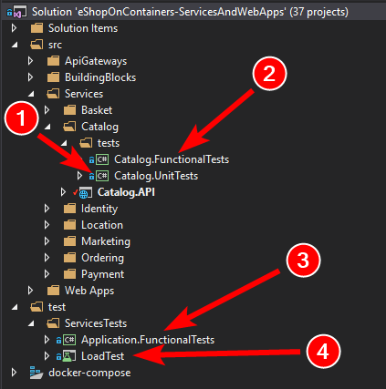
Figure 6-25. Test folder structure in eShopOnContainers
Microservice and Application functional/integration tests are run from Visual Studio, using the regular tests runner, but first you need to start the required infrastructure services, by means of a set of docker-compose files contained in the solution test folder:
docker-compose-test.yml
docker-compose-test.override.yml
So, to run the functional/integration tests you must first run this command, from the solution test folder:
As you can see, these docker-compose files only start the Redis, RabitMQ, SQL Server and MongoDB microservices.
Background tasks and scheduled jobs are something you might need to implement, eventually, in a microservice based application or in any kind of application. The difference when using a microservices architecture is that you can implement a single microservice process/container for hosting these background tasks so you can scale it down/up as you need or you can even make sure that it runs a single instance of that microservice process/container.
From a generic point of view, in .NET Core we called these type of tasks Hosted Services, because they are services/logic that you host within your host/application/microservice. Note that in this case, the hosted service simply means a class with the background task logic.
Since .NET Core 2.0, the framework provides a new interface named IHostedService helping you to easily implement hosted services. The basic idea is that you can register multiple background tasks (hosted services), that run in the background while your web host or host is running, as shown in the image 6-26.
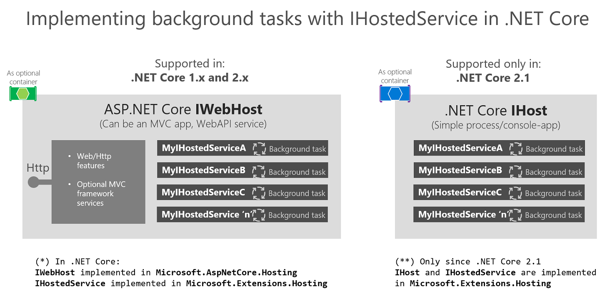
Figure 6-26. Using IHostedService in a WebHost vs. a Host
Note the difference made between WebHost and Host.
A WebHost (base class implementing IWebHost) in ASP.NET Core 2.0 is the infrastructure artifact you use to provide HTTP server features to your process, such as if you are implementing an MVC web app or Web API service. It provides all the new infrastructure goodness in ASP.NET Core, enabling you to use dependency injection, insert middlewares in the request pipeline, etc. and precisely use these IHostedServices for background tasks.
A Host (base class implementing IHost) was introduced in .NET Core 2.1. Basically, a Host allows you to have a similar infrastructure than what you have with WebHost (dependency injection, hosted services, etc.), but in this case, you just want to have a simple and lighter process as the host, with nothing related to MVC, Web API or HTTP server features.
Therefore, you can choose and either create a specialized host-process with IHost to handle the hosted services and nothing else, such a microservice made just for hosting the IHostedServices, or you can alternatively extend an existing ASP.NET Core WebHost, such as an existing ASP.NET Core Web API or MVC app.
Each approach has pros and cons depending on your business and scalability needs. The bottom line is basically that if your background tasks have nothing to do with HTTP (IWebHost) you should use IHost.
Let’s drill down further on the IHostedService interface since its usage is pretty similar in a WebHost or in a Host.
SignalR is one example of an artifact using hosted services, but you can also use it for much simpler things like:
You can basically offload any of those actions to a background task based on IHostedService.
The way you add one or multiple IHostedServices into your WebHost or Host is by registering them up through the standard DI (dependency injection) in an ASP.NET Core WebHost (or in a Host in .NET Core 2.1 and above). Basically, you have to register the hosted services within the familiar ConfigureServices() method of the Startup class, as in the following code from a typical ASP.NET WebHost.
In that code, the GracePeriodManagerService hosted service is real code from the Ordering business microservice in eShopOnContainers, while the other two are just two additional samples.
The IHostedService background task execution is coordinated with the lifetime of the application (host or microservice, for that matter). You register tasks when the application starts and you have the opportunity to do some graceful action or clean-up when the application is shutting down.
Without using IHostedService, you could always start a background thread to run any task. The difference is precisely at the app’s shutdown time when that thread would simply be killed without having the opportunity to run graceful clean-up actions.
When you register an IHostedService, .NET Core will call the StartAsync() and StopAsync() methods of your IHostedService type during application start and stop respectively. Specifically, start is called after the server has started and IApplicationLifetime.ApplicationStarted is triggered.
The IHostedService as defined in .NET Core, looks like the following.
As you can imagine, you can create multiple implementations of IHostedService and register them at the ConfigureService() method into the DI container, as shown previously. All those hosted services will be started and stopped along with the application/microservice.
As a developer, you are responsible for handling the stopping action or your services when StopAsync() method is triggered by the host.
You could go ahead and create your custom hosted service class from scratch and implement the IHostedService, as you need to do when using .NET Core 2.0.
However, since most background tasks will have similar needs in regard to the cancellation tokens management and other typical operations, there is a convenient abstract base class you can derive from, named BackgroundService (available since .NET 2.1).
That class provides the main work needed to set up the background task.
The next code is the abstract BackgroundService base class as implemented in .NET Core.
When deriving from the previous abstract base class, thanks to that inherited implementation, you just need to implement the ExecuteAsync() method in your own custom hosted service class, as in the following simplified code from eShopOnContainers which is polling a database and publishing integration events into the Event Bus when needed.
In this specific case for eShopOnContainers, it’s executing an application method that’s querying a database table looking for orders with a specific state and when applying changes, it is publishing integration events through the event bus (underneath it can be using RabbitMQ or Azure Service Bus).
Of course, you could run any other business background task, instead.
By default, the cancellation token is set with a 5 second timeout, although you can change that value when building your WebHost using the UseShutdownTimeout extension of the IWebHostBuilder. This means that our service is expected to cancel within 5 seconds otherwise it will be more abruptly killed.
The following code would be changing that time to 10 seconds.
The following image shows a visual summary of the classes and interfaced involved when implementing IHostedServices.
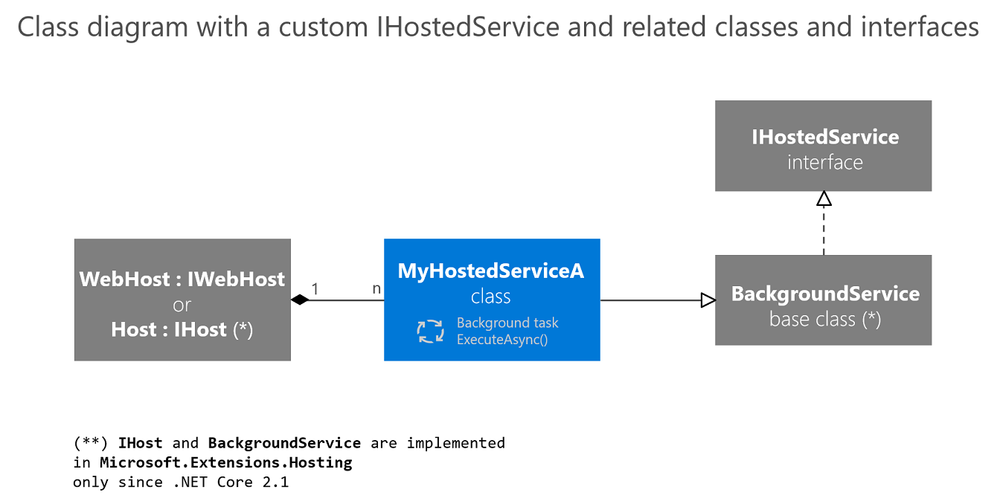
Figure 6-27. Class diagram showing the multiple classes and interfaces related to IHostedService
It is important to note that the way you deploy your ASP.NET Core WebHost or .NET Core Host might impact the final solution. For instance, if you deploy your WebHost on IIS or a regular Azure App Service, your host can be shut down because of app pool recycles. But if you are deploying your host as a container into an orchestrator like Kubernetes or Service Fabric, you can control the assured number of live instances of your host. In addition, you could consider other approaches in the cloud especially made for these scenarios, like Azure Functions. Finally, if you need the service to be running all the time and are deploying on a Windows Server you could use a Windows Service.
But even for a WebHost deployed into an app pool, there are scenarios like repopulating or flushing application’s in-memory cache, that would be still applicable.
The IHostedService interface provides a convenient way to start background tasks in an ASP.NET Core web application (in .NET Core 2.0) or in any process/host (starting in .NET Core 2.1 with IHost). Its main benefit is the opportunity you get with the graceful cancellation to clean-up code of your background tasks when the host itself is shutting down.
The reference microservice application eShopOnContainers is using Ocelot, a simple and lightweight API Gateway that you can deploy anywhere along with your microservices/containers, such as in any of the following environments used by eShopOnContainers.
The following architecture diagram shows how API Gateways are implemented with Ocelot in eShopOnContainers.
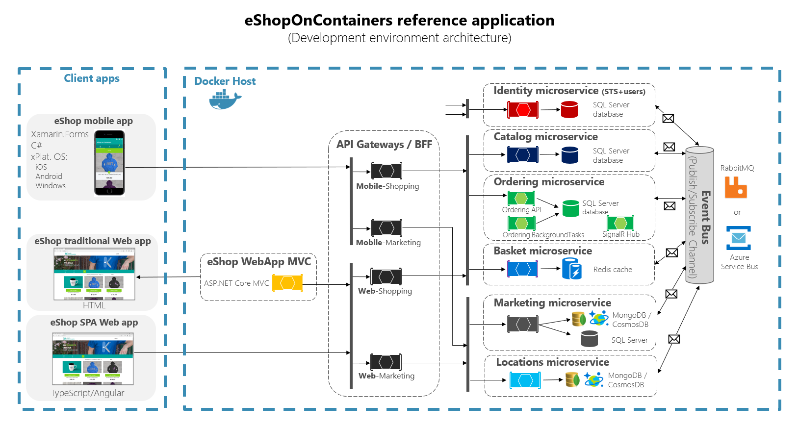
Figure 6-28. eShopOnContainers architecture with API Gateways
That diagram shows how the whole application is deployed into a single Docker host or development PC with “Docker for Windows” or “Docker for Mac”. However, deploying into any orchestrator would be pretty similar but any container in the diagram could be scaled-out in the orchestrator.
In addition, the infrastructure assets such as databases, cache, and message brokers should be offloaded from the orchestrator and deployed into high available systems for infrastructure, like Azure SQL Database, Azure Cosmos DB, Azure Redis, Azure Service Bus, or any HA clustering solution on-premises.
As you can also notice in the diagram, having several API Gateways allows multiple development teams to be autonomous (in this case Marketing features vs. Shopping features) when developing and deploying their microservices plus their own related API Gateways.
If you had a single monolithic API Gateway that would mean a single point to be updated by several development teams, which could couple all the microservices with a single part of the application.
Going much further in the design, sometimes a fine-grained API Gateway can also be limited to a single business microservice depending on the chosen architecture. Having the API Gateway’s boundaries dictated by the business or domain will help you to get a better design.
For instance, fine granularity in the API Gateway tier can be especially useful for more advanced composite UI applications that are based on microservices, because the concept of a fine-grained API Gateway is similar to a UI composition service.
We delve into more details in the previous section Creating composite UI based on microservices.
As key takeaway, for many medium- and large-size applications, using a custom-built API Gateway product is usually a good approach, but not as a single monolithic aggregator or unique central custom API Gateway unless that API Gateway allows multiple independent configuration areas for the several development teams creating autonomous microservices.
As an example, eShopOnContainers has around six internal microservice-types that have to be published through the API Gateways, as shown in the following image.
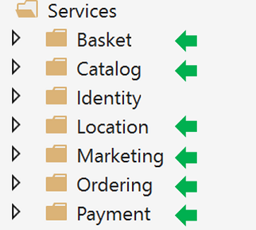
Figure 6-29. Microservice folders in eShopOnContainers solution in Visual Studio
About the Identity service, in the design it’s left out of the API Gateway routing because it’s the only cross-cutting concern in the system, although with Ocelot it’s also possible to include it as part of the rerouting lists.
All those services are currently implemented as ASP.NET Core Web API services, as you can tell from the code. Let’s focus on one of the microservices like the Catalog microservice code.
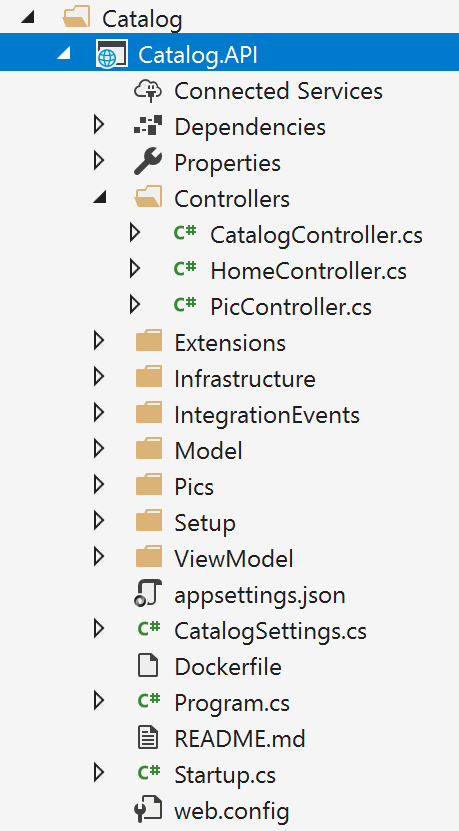
Figure 6-30. Sample Web API microservice (Catalog microservice)
You can see that the Catalog microservice is a typical ASP.NET Core Web API project with several controllers and methods like in the following code.
The HTTP request will end up running that kind of C# code accessing the microservice database and any additional required action.
Regarding the microservice URL, when the containers are deployed in your local development PC (local Docker host), each microservice’s container has always an internal port (usually port 80) specified in its dockerfile, as in the following dockerfile:
The port 80 shown in the code is internal within the Docker host, so it can’t be reached by client apps.
Client apps can access only the external ports (if any) published when deploying with docker-compose.
Those external ports shouldn’t be published when deploying to a production environment. This is precisely why you want to use the API Gateway, to avoid the direct communication between the client apps and the microservices.
However, when developing, you want to access the microservice/container directly and run it through Swagger. That’s why in eShopOnContainers, the external ports are still specified even when they won’t be used by the API Gateway or the client apps.
Here’s an example of the docker-compose.override.yml file for the Catalog microservice:
You can see how in the docker-compose.override.yml configuration the internal port for the Catalog container is port 80, but the port for external access is 5101. But this port shouldn’t be used by the application when using an API Gateway, only to debug, run and test just the Catalog microservice.
Normally, you won’t be deploying with docker-compose into a production environment because the right production deployment environment for microservices is an orchestrator like Kubernetes or Service Fabric. When deploying to those environments you use different configuration files where you won’t publish directly any external port for the microservices but, you’ll always use the reverse proxy from the API Gateway.
Run the catalog microservice in your local Docker host either by running the full eShopOnContainers solution from Visual Studio (it’ll run all the services in the docker-compose files) or just starting the Catalog microservice with the following docker-compose command in CMD or PowerShell positioned at the folder where the docker-compose.yml and docker-compose.override.yml are placed.
This command only runs the catalog.api service container plus dependencies that are specified in the docker-compose.yml. In this case, the SQL Server container and RabbitMQ container.
Then, you can directly access the Catalog microservice and see its methods through the Swagger UI accessing directly through that “external” port, in this case http://localhost:5101/swagger:
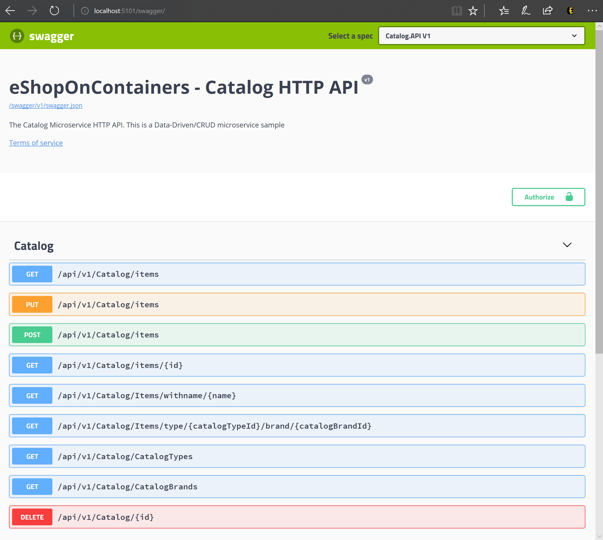
Figure 6-31. Testing the Catalog microservice with its Swagger UI
At this point, you could set a breakpoint in C# code in Visual Studio, test the microservice with the methods exposed in Swagger UI, and finally clean-up everything with the docker-compose down command.
However, direct-access communication to the microservice, in this case through the external port 5101, is precisely what you want to avoid in your application. And you can avoid that by setting the additional level of indirection of the API Gateway (Ocelot, in this case). That way, the client app won’t directly access the microservice.
Ocelot is basically a set of middlewares that you can apply in a specific order.
Ocelot is designed to work with ASP.NET Core only. It targets netstandard2.0 so it can be used anywhere .NET Standard 2.0 is supported, including .NET Core 2.0 runtime and .NET Framework 4.6.1 runtime and up.
You install Ocelot and its dependencies in your ASP.NET Core project with Ocelot’s NuGet package, from Visual Studio.
In eShopOnContainers, its API Gateway implementation is a simple ASP.NET Core WebHost project, and Ocelot’s middlewares handle all the API Gateway features, as shown in the following image:
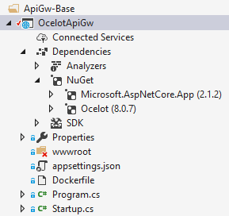
Figure 6-32. The OcelotApiGw base project in eShopOnContainers
This ASP.NET Core WebHost project is basically built with two simple files: Program.cs and Startup.cs.
The Program.cs just needs to create and configure the typical ASP.NET Core BuildWebHost.
The important point here for Ocelot is the configuration.json file that you must provide to the builder through the AddJsonFile() method. That configuration.json is where you specify all the API Gateway ReRoutes, meaning the external endpoints with specific ports and the correlated internal endpoints, usually using different ports.
There are two sections to the configuration. An array of Re-Routes and a GlobalConfiguration. The Re-Routes are the objects that tell Ocelot how to treat an upstream request. The Global configuration allows overrides of Re-Route specific settings. It’s useful if you don’t want to manage lots of Re-Route specific settings.
Here’s a simplified example of ReRoute configuration file from one of the API Gateways from eShopOnContainers.
The main functionality of an Ocelot API Gateway is to take incoming HTTP requests and forward them on to a downstream service, currently as another HTTP request. Ocelot’s describes the routing of one request to another as a Re-Route.
For instance, let’s focus on one of the Re-Routes in the configuration.json from above, the configuration for the Basket microservice.
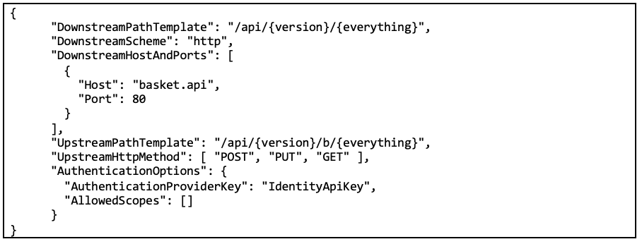The DownstreamPathTemplate, Scheme, and DownstreamHostAndPorts make the internal microservice URL that this request will be forwarded to.
The port is the internal port used by the service. When using containers, the port specified at its dockerfile.
The Host is a service name that depends on the service name resolution you are using. When using docker-compose, the services names are provided by the Docker Host, which is using the service names provided in the docker-compose files. If using an orchestrator like Kubernetes or Service Fabric, that name should be resolved by the DNS or name resolution provided by each orchestrator.
DownstreamHostAndPorts is an array that contains the host and port of any downstream services that you wish to forward requests to. Usually this will just contain one entry but sometimes you might want to load balance requests to your downstream services and Ocelot lets you add more than one entry and then select a load balancer. But if using Azure and any orchestrator it is probably a better idea to load balance with the cloud and orchestrator infrastructure.
The UpstreamPathTemplate is the URL that Ocelot will use to identify which DownstreamPathTemplate to use for a given request from the client. Finally, the UpstreamHttpMethod is used so Ocelot can distinguish between different requests (GET, POST, PUT) to the same URL.
At this point, you could have a single Ocelot API Gateway (ASP.NET Core WebHost) using one or multiple merged configuration.json files or you can also store the configuration in a Consul KV store.
But as introduced in the architecture and design sections, if you really want to have autonomous microservices, it might be better to split that single monolithic API Gateway into multiple API Gateways and/or BFF (Backend for Frontend). For that purpose, let’s see how to implement that approach with Docker containers.
In eShopOnContainers we’re using a single Docker container image with the Ocelot API Gateway but then, at run time, we create different services/containers for each type of API-Gateway/BFF by providing a different configuration.json file, using a docker volume to access a different PC folder for each service.
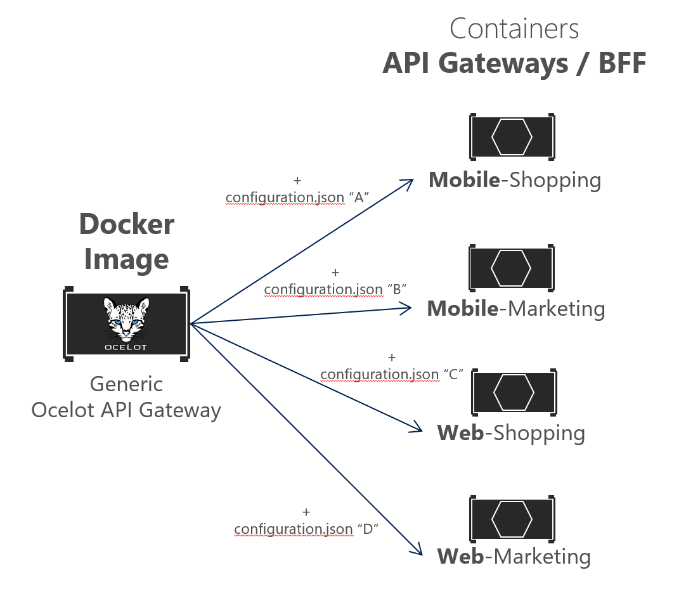
Figure 6-33. Re-using a single Ocelot Docker image across multiple API Gateway types
In eShopOnContainers, the “Generic Ocelot API Gateway Docker Image” is created with the project named ‘OcelotApiGw’ and the image name “eshop/ocelotapigw” that is specified in the docker-compose.yml file. Then, when deploying to Docker, there will be four API-Gateway containers created from that same Docker image, as shown in the following extract from the docker-compose.yml file.
Additionally, as you can see in the following docker-compose.override.yml file, the only difference between those API Gateway containers is the Ocelot configuration file, which is different for each service container and it’s specified at runtime through a Docker volume.
Because of that previous code, and as shown in the Visual Studio Explorer below, the only file needed to define each specific business/BFF API Gateway is just a configuration.json file, because the four API Gateways are based on the same Docker image.
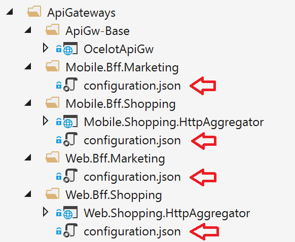
Figure 6-34. The only file needed to define each API Gateway / BFF with Ocelot is a configuration file
By splitting the API Gateway into multiple API Gateways, different development teams focusing on different subsets of microservices can manage their own API Gateways by using independent Ocelot configuration files. Plus, at the same time they can reuse the same Ocelot Docker image.
Now, if you run eShopOnContainers with the API Gateways (included by default in VS when opening eShopOnContainers-ServicesAndWebApps.sln solution or if running “docker-compose up”), the following sample routes will be performed.
For instance, when visiting the upstream URL http://localhost:5202/api/v1/c/catalog/items/2/ served by the webshoppingapigw API Gateway, you get the same result from the internal Downstream URL http://catalog.api/api/v1/2 within the Docker host, as in the following browser.
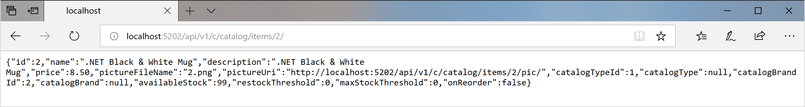
Figure 6-35. Accessing a microservice through a URL provided by the API Gateway
Because of testing or debugging reasons, if you wanted to directly access to the Catalog Docker container (only at the development environment) without passing through the API Gateway, since ‘catalog.api’ is a DNS resolution internal to the Docker host (service discovery handled by docker-compose service names), the only way to directly access the container is through the external port published in the docker-compose.override.yml, which is provided only for development tests, such as http://localhost:5101/api/v1/Catalog/items/1 in the following browser.
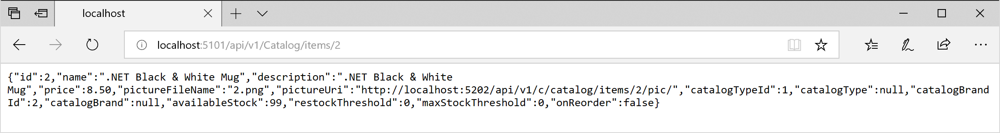
Figure 6-36. Direct access to a microservice for testing purposes
But the application is configured so it accesses all the microservices through the API Gateways, not though the direct port “shortcuts”.
As introduced previously, a flexible way to implement requests aggregation is with custom services, by code. You could also implement request aggregation with the Request Aggregation feature in Ocelot, but it might not be as flexible as you need. Therefore, the selected way to implement aggregation in eShopOnContainers is with an explicit ASP.NET Core Web API services for each aggregator.
According to that approach, the API Gateway composition diagram is in reality a bit more extended when considering the aggregator services that are not shown in the simplified global architecture diagram shown previously.
In the following diagram, you can also see how the aggregator services work with their related API Gateways.
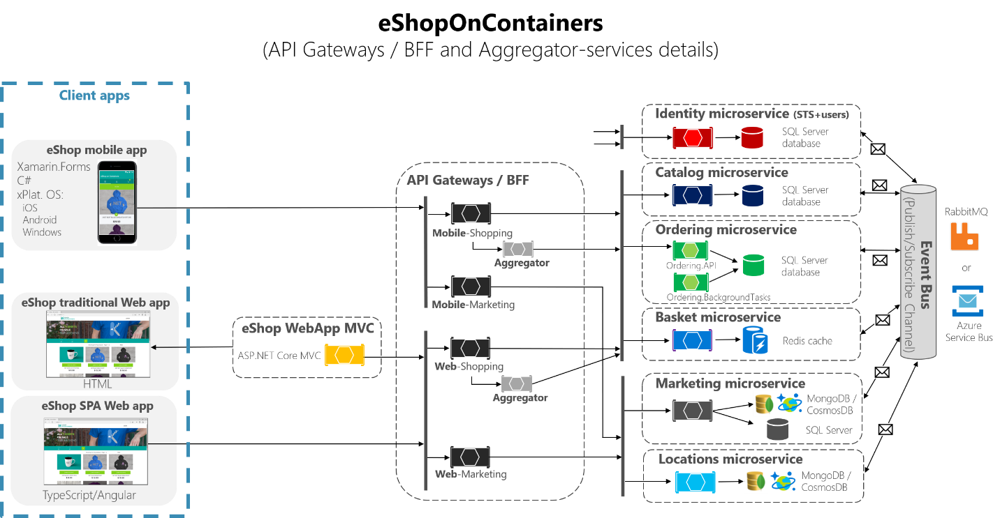
Figure 6-37. eShopOnContainers architecture with aggregator services
Zooming in further, on the “Shopping” business area in the following image, you can see that chattiness between the client apps and the microservices is reduced when using the aggregator services in the API Gateways.
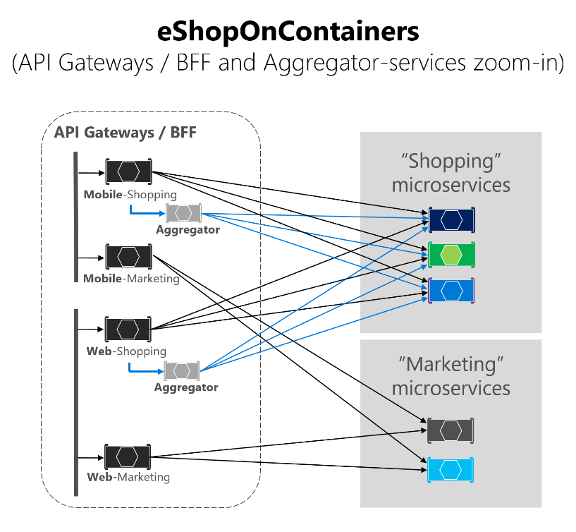
Figure 6-38. Zoom in vision of the Aggregator services
You can notice how when the diagram shows the possible requests coming from the API Gateways it can get pretty complex. Although you can see how the arrows in blue would be simplified, from a client apps perspective, when using the aggregator pattern by reducing chattiness and latency in the communication, ultimately significantly improving the user experience for the remote apps (mobile and SPA apps), especially.
In the case of the “Marketing” business area and microservices, it is a very simple use case so there was no need to use aggregators, but it could also be possible, if needed.
In an Ocelot API Gateway you can sit the authentication service, such as an ASP.NET Core Web API service using IdentityServer providing the auth token, either out or inside the API Gateway.
Since eShopOnContainers is using multiple API Gateways with boundaries based on BFF and business areas, the Identity/Auth service is left out of the API Gateways, as highlighted in yellow in the following diagram.
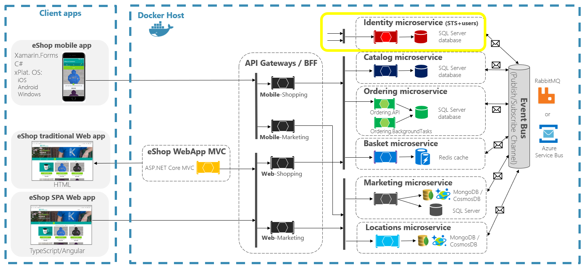
Figure 6-39. Position of the Identity service in eShopOnContainers
However, Ocelot also supports sitting the Identity/Auth microservice within the API Gateway boundary, as in this other diagram.
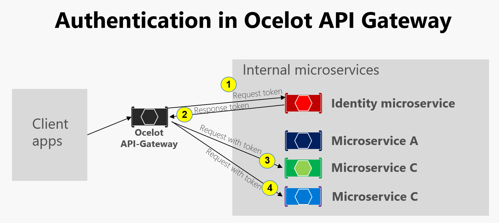
Figure 6-40. Authentication in Ocelot
Because eShopOnContainers application has split the API Gateway into multiple BFF (Backend for Frontend) and business areas API Gateways, another option would had been to create an additional API Gateway for cross-cutting concerns. That choice would be fair in a more complex microservice based architecture with multiple cross-cutting concerns microservices. Since there’s only one cross-cutting concern in eShopOnContainers, it was decided to just handle the security service out of the API Gateway realm, for simplicity’s sake.
In any case, if the app is secured at the API Gateway level, the authentication module of the Ocelot API Gateway is visited at first when trying to use any secured microservice. That re-directs the HTTP request to visit the Identity or auth microservice to get the access token so you can visit the protected services with the access_token.
The way you secure with authentication any service at the API Gateway level is by setting the AuthenticationProviderKey in its related settings at the configuration.json.
When Ocelot runs, it will look at the Re-Routes AuthenticationOptions.AuthenticationProviderKey and check that there is an Authentication Provider registered with the given key. If there isn’t, then Ocelot will not start up. If there is, then the ReRoute will use that provider when it executes.
Because the Ocelot WebHost is configured with the authenticationProviderKey = “IdentityApiKey”, that will require authentication whenever that service has any requests without any auth token.
Then, you also need to set authorization with the [Authorize] attribute on any resource to be accessed like the microservices, such as in the following Basket microservice controller.
The ValidAudiences such as “basket” are correlated with the audience defined in each microservice with AddJwtBearer() at the ConfigureServices() of the Startup class, such as in the code below.
If you try to access any secured microservice, like the Basket microservice with a Re-Route URL based on the API Gateway like http://localhost:5202/api/v1/b/basket/1, then you’ll get a 401 Unauthorized unless you provide a valid token. On the other hand, if a Re-Route URL is authenticated, Ocelot will invoke whatever downstream scheme is associated with it (the internal microservice URL).
Authorization at Ocelot’s ReRoutes tier. Ocelot supports claims-based authorization evaluated after the authentication. You set the authorization at a route level by adding the following lines to the ReRoute configuration.
In that example, when the authorization middleware is called, Ocelot will find if the user has the claim type ‘UserType’ in the token and if the value of that claim is ‘employee’. If it isn’t, then the user will not be authorized and the response will be 403 forbidden.
When using Kubernetes (like in an Azure Kubernetes Service cluster), you usually unify all the HTTP requests through the Kubernetes Ingress tier based on Nginx.
In Kubernetes, if you don’t use any ingress approach, then your services and pods have IPs only routable by the cluster network.
But if you use an ingress approach, you’ll have a middle tier between the Internet and your services (including your API Gateways), acting as a reverse proxy.
As a definition, an Ingress is a collection of rules that allow inbound connections to reach the cluster services. An ingress is usually configured to provide services externally reachable URLs, load balance traffic, SSL termination and more. Users request ingress by POSTing the Ingress resource to the API server.
In eShopOnContainers, when developing locally and using just your development machine as the Docker host, you are not using any ingress but only the multiple API Gateways.
However, when targeting a “production” environment based on Kubernetes, eShopOnContainers is using an ingress in front of the API gateways. That way, the clients still call the same base URL but the requests are routed to multiple API Gateways or BFF.
Note that API Gateways are front-ends or façades surfacing only the services but not the web applications that are usually out of their scope. In addition, the API Gateways might hide certain internal microservices.
The ingress, however, is just redirecting HTTP requests but not trying to hide any microservice or web app.
Having an ingress Nginx tier in Kubernetes in front of the web applications plus the several Ocelot API Gateways / BFF is the ideal architecture, as shown in the following diagram.
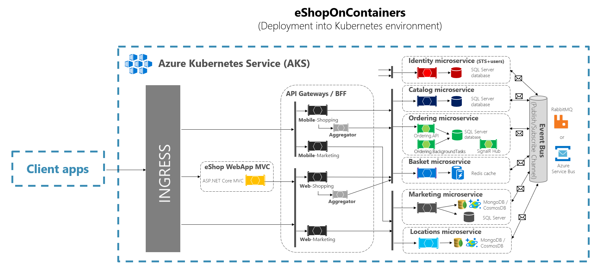
Figure 6-41. The ingress tier in eShopOnContainers when deployed into Kubernetes
When you deploy eShopOnContainers into Kubernetes, it exposes just a few services or endpoints via ingress, basically the following list of postfixes on the URLs:
When deploying to Kubernetes, each Ocelot API Gateway is using a different “configuration.json” file for each pod running the API Gateways. Those “configuration.json” files are provided by mounting (originally with the deploy.ps1 script) a volume created based on a Kubernetes config map named ‘ocelot’. Each container mounts its related configuration file in the container’s folder named /app/configuration.
In the source code files of eShopOnContainers, the original “configuration.json” files can be found within the k8s/ocelot/ folder. There’s one file for each BFF/APIGateway.
There are other important features to research and use, when using an Ocelot API Gateway, described in the following links.